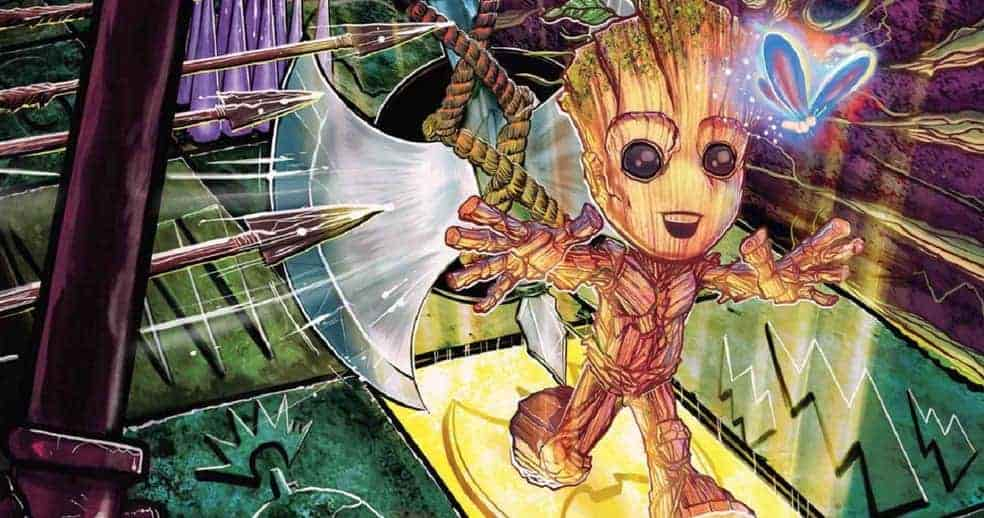
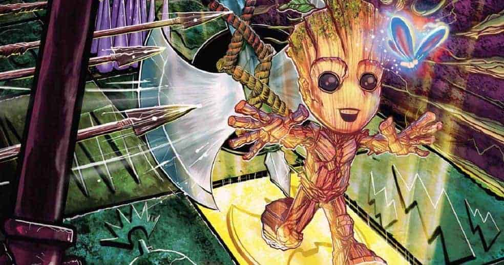
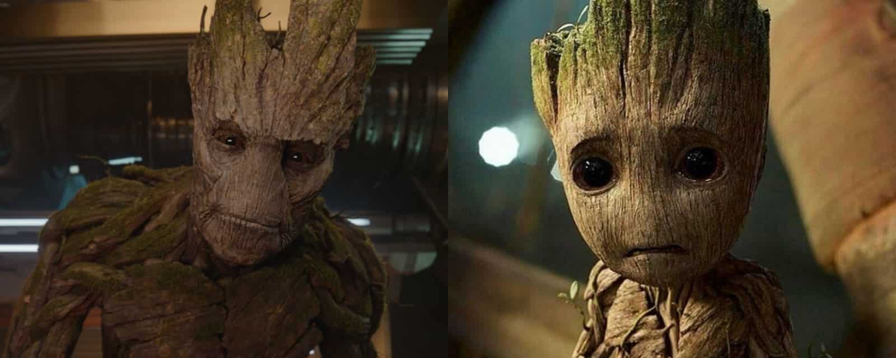

Groot ficou muito conhecido, ultimamente, por conta do filme de James Gunn e voltou aparecer como bebê em Guardiões da galáxia. Sua primeira aparição se deu em 1960 na Tales to Astonish #13. No início de tudo Groot era apenas um vilão da Marvel, pertencente à espécie alienigena, os Colossos Florais. Podiamos verificar também que Groot conseguia falar mais palavras do que apenas as três que o público conhece, e foi com o passar do tempo que introduziram a informação de que as cordas vocais do personagem eram espessas o que dificulta sua comunicação e faz com que ele só consiga falar: "Eu sou Groot"!
 

Vídeos do Baby Groot
Resumo personagem
Groot é um personagem fictício que aparece nas histórias em quadrinhos publicadas pela Marvel Comics. Sua primeira versão foi criada por Stan Lee, Jack Kirby e Dick Ayers. O personagem foi reformulado em 2006 por Keith Giffen e Timothy Green II para ser um nobre herói, aparecendo pela primeira vez no enredo Annihilation: Conquest em setembro de 2007. Desde sua estréia no cinema e estréia na série animada, Groot se tornou um ícone da cultura pop e sua frase "Eu sou o Groot" se tornou um meme da Internet.
Groot é uma árvore alienígena poderosa, ele possui várias habilidades físicas semelhantes a uma árvore normal e grande, e entre elas uma força maior que o normal, capaz de vencer lutando mão-a-mão e derrubar e quebrar qualquer objeto. Groot também pode se regenerar e reconstruir membros feridos. E além disso Groot também pode fazer crescer seus membros em formas de cipós e pode liberar esporos de luz. Em sua idade adulta, Groot encontrava-se no Planeta Hala, capital dos Kree, onde é prontamente capturado e aprisionado. Enquanto na prisão, ele começa uma amizade com Rocket Raccoon e é designado para uma equipe de operações secretas liderada pelo Senhor das Estrelas, cujo objetivo era atacar Hala e derrotar Phalanx. Em meio a batalha, seu corpo é destruído, mas um pequeno galho dele fica preservado, Groot agora pequeno, passa a viajar sob os cuidados de Rocket, assim, ele consegue voltar a crescer com o tempo.